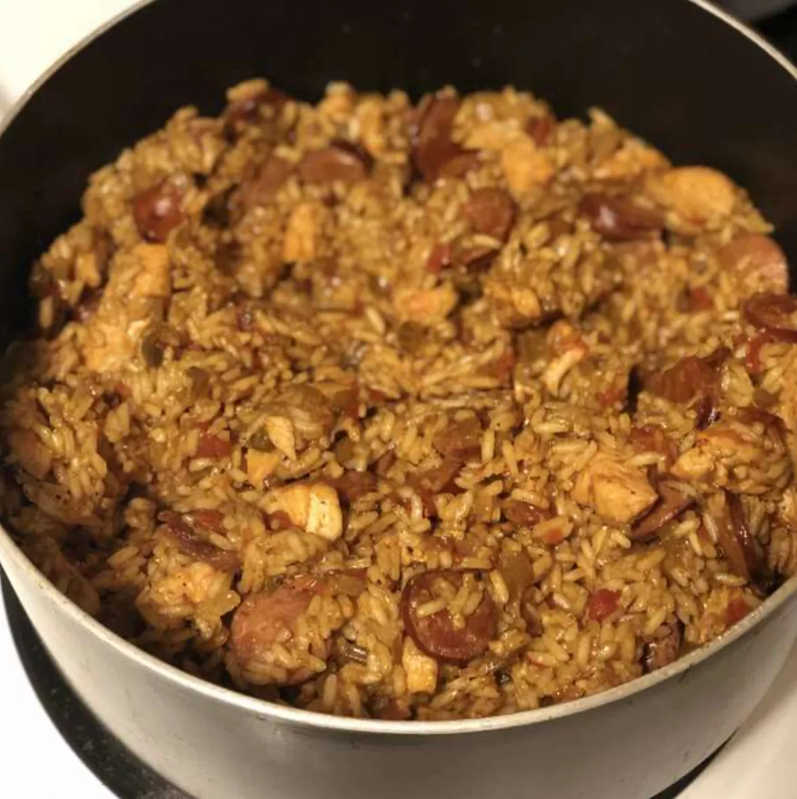

Best Jambalaya
A spicy jambalaya with chicken, andouille sausage, rice, and Cajun seasonings that's easy to make in one pot.

This jambalaya recipe is savory, spicy, and oh-so satisfying. The Allrecipes community can't get enough of the top-rated jambalaya — it has earned more than 1,000 rave reviews from happy home cooks.
What is Jambalaya?
Jambalaya is a one-pot dish that's made with rice, meat or seafood, and vegetables. With French and Spanish influences, jambalaya is quite similar to paella. The name "jambalaya" likely comes from the Provençal word "jambalaia," which means mishmash.
Like many Cajun and Creole foods, jambalaya starts with the Cajun holy trinity: a flavor base of onion, bell peppers, and celery.
Jambalaya Ingredients
These are the ingredients you'll need to make the best jambalaya of your life:
- Oil: Chicken and andouille sausage are sautéed in peanut oil.
- Sausage:Opt for andouille sausage for the most authentic jambalaya.
- Chicken:Cut one pound of boneless, skinless chicken breasts into 1-inch pieces.
- Spices and Seasonings:This chicken and sausage jambalaya is flavored with Cajun seasoning, fresh garlic, red pepper flakes, salt, pepper, hot sauce, Worcestershire sauce, and file powder.
- Vegetables:You'll need an onion, green bell peppers, and celery.
- Rice:Opt for plain white rice for this jambalaya recipe.
- Broth:Use store-bought or homemade chicken broth to cook the rice.
How to make Jambalaya
You'll find the full, step-by-step recipe below but here's a brief overview of what you can expect when you make this tried-and-true chicken and sausage jambalaya:
- Cook the meat:Season the sausage and chicken pieces with Cajun seasoning. Sauté the sausage until browned, then remove with a slotted spoon and set aside. Sauté chicken until lightly browned on all sides. Remove with a slotted spoon and set aside.
- Cook the vegetables:In the same pot, sauté the onion, celery, bell pepper, and garlic until tender. Stir in the crushed tomatoes and seasonings. Add the meat and cook for 10 minutes.
- Add the rice:Stir in the rice and chicken broth. Bring to a boil, reduce the heat, and cook until all the liquid is absorbed.

What to serve with Jambalaya
Jambalaya, with its hearty and satisfying ingredients, is a meal all on its own. You don't technically need to serve it with anything. If you want to go the extra mile, though, here are a few mouthwatering ideas:
How to store Jambalaya?
Allow the jambalaya to cool completely, then transfer it to an airtight container. Store in the refrigerator for three to four days. Reheat on the microwave or stove. If you're worried about the jambalaya drying out as it reheats, add a bit of broth to keep it moist.
Can you Freeze Jambalaya
Yes, you can freeze jambalaya for up to three months. Ladle it (in serving-size portions) into zip-top freezer bags. Wrap each bag in foil and freeze flat.
Ingredients
- 2 tablesspoons peanut oil, divided
- 1 tablespoon Cajun seasoning
- 10 ounces andouille sausage, sliced into rounds
- 1 pound boneless skinless chicken breasts, cut into 1 inche pieces
- 1 onion, diced
- 1 small green pepper, diced
- 2 stalks celery, diced
- 3 cloves garlic, minced
- 1 (16 ounce) can crushed Italian tomatoes
- 1/2